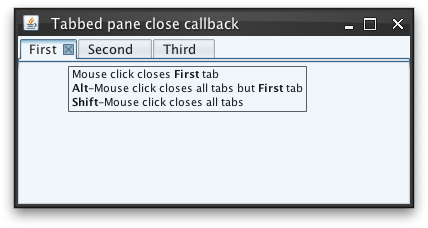

|
Sample code |
import java.awt.BorderLayout;
import java.awt.event.MouseEvent;
import javax.swing.JFrame;
import javax.swing.JPanel;
import javax.swing.JTabbedPane;
import javax.swing.SwingUtilities;
import org.pushingpixels.substance.api.SubstanceLookAndFeel;
import org.pushingpixels.substance.api.SubstanceConstants.TabCloseKind;
import org.pushingpixels.substance.api.skin.BusinessBlackSteelSkin;
import org.pushingpixels.substance.api.tabbed.TabCloseCallback;
/**
* Test application that shows the use of the
* {@link SubstanceLookAndFeel#TABBED_PANE_CLOSE_CALLBACK} client property.
*
* @author Kirill Grouchnikov
* @see SubstanceLookAndFeel#TABBED_PANE_CLOSE_CALLBACK
*/
public class TabbedPaneCloseCallback extends JFrame {
/**
* Creates the main frame for <code>this</code> sample.
*/
public TabbedPaneCloseCallback() {
super("Tabbed pane close callback");
this.setLayout(new BorderLayout());
// create tabbed pane with a few tabs
final JTabbedPane jtp = new JTabbedPane();
jtp.addTab("First", new JPanel());
jtp.addTab("Second", new JPanel());
jtp.addTab("Third", new JPanel());
// mark it to have close buttons on all the tabs
jtp.putClientProperty(
SubstanceLookAndFeel.TABBED_PANE_CLOSE_BUTTONS_PROPERTY,
Boolean.TRUE);
this.add(jtp, BorderLayout.CENTER);
// create a custom implementation of TabCloseCallback interface.
TabCloseCallback closeCallback = new TabCloseCallback() {
public TabCloseKind onAreaClick(JTabbedPane tabbedPane,
int tabIndex, MouseEvent mouseEvent) {
if (mouseEvent.getButton() != MouseEvent.BUTTON3)
return TabCloseKind.NONE;
if (mouseEvent.isShiftDown()) {
return TabCloseKind.ALL;
}
return TabCloseKind.THIS;
}
public TabCloseKind onCloseButtonClick(JTabbedPane tabbedPane,
int tabIndex, MouseEvent mouseEvent) {
if (mouseEvent.isAltDown()) {
return TabCloseKind.ALL_BUT_THIS;
}
if (mouseEvent.isShiftDown()) {
return TabCloseKind.ALL;
}
return TabCloseKind.THIS;
}
public String getAreaTooltip(JTabbedPane tabbedPane, int tabIndex) {
return null;
}
public String getCloseButtonTooltip(JTabbedPane tabbedPane,
int tabIndex) {
StringBuffer result = new StringBuffer();
result.append("<html><body>");
result.append("Mouse click closes <b>"
+ tabbedPane.getTitleAt(tabIndex) + "</b> tab");
result
.append("<br><b>Alt</b>-Mouse click closes all tabs but <b>"
+ tabbedPane.getTitleAt(tabIndex) + "</b> tab");
result.append("<br><b>Shift</b>-Mouse click closes all tabs");
result.append("</body></html>");
return result.toString();
}
};
// register the callback on the tabbed pane
jtp.putClientProperty(SubstanceLookAndFeel.TABBED_PANE_CLOSE_CALLBACK,
closeCallback);
this.setSize(400, 200);
this.setLocationRelativeTo(null);
this.setDefaultCloseOperation(JFrame.EXIT_ON_CLOSE);
}
/**
* The main method for <code>this</code> sample. The arguments are ignored.
*
* @param args
* Ignored.
*/
public static void main(String[] args) {
JFrame.setDefaultLookAndFeelDecorated(true);
SwingUtilities.invokeLater(new Runnable() {
public void run() {
SubstanceLookAndFeel.setSkin(new BusinessBlackSteelSkin());
new TabbedPaneCloseCallback().setVisible(true);
}
});
}
}
The screenshot below shows tabbed pane with custom close callback
installed. The mouse hovers over the close button of the first tab.

|